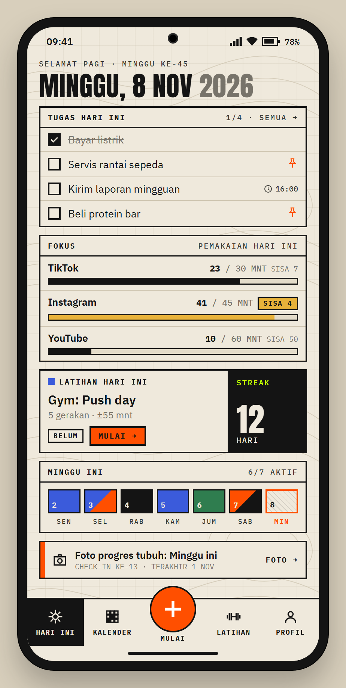
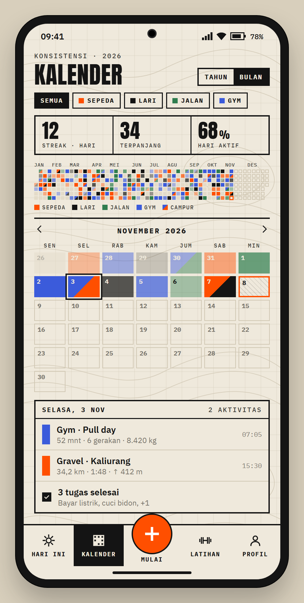
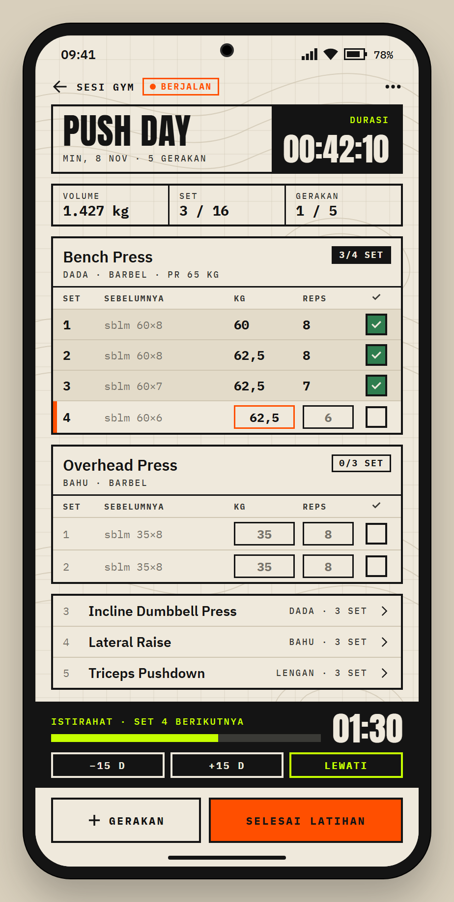
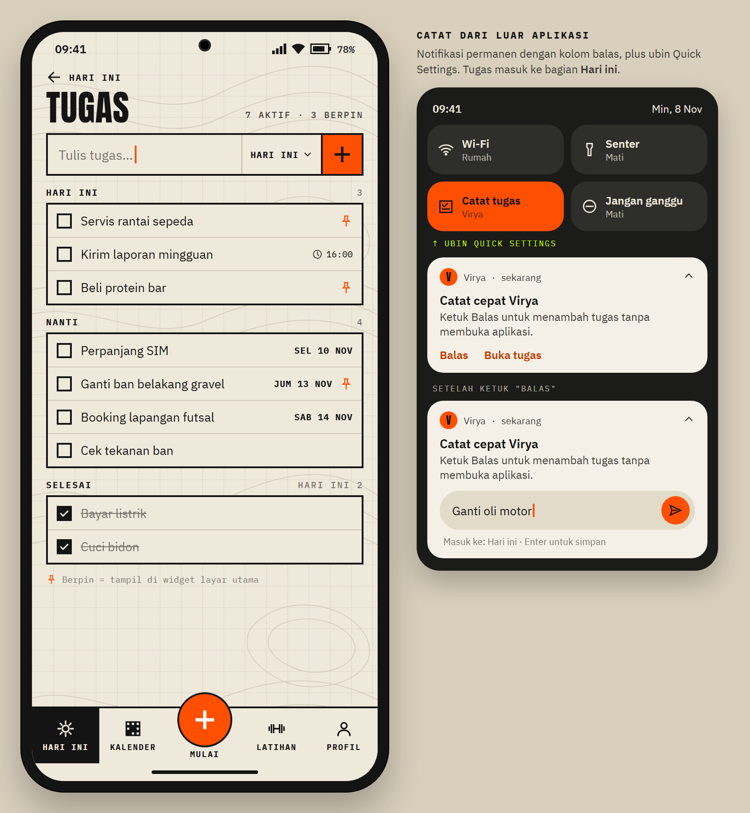
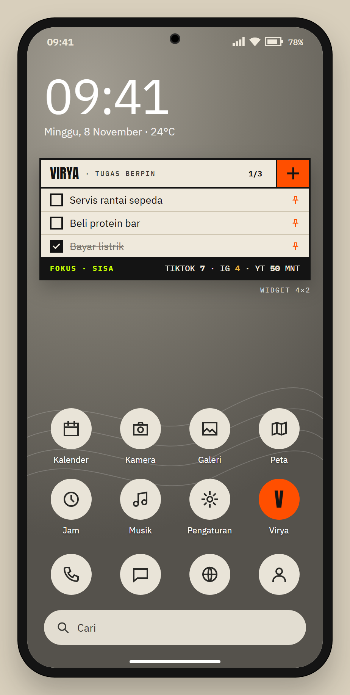
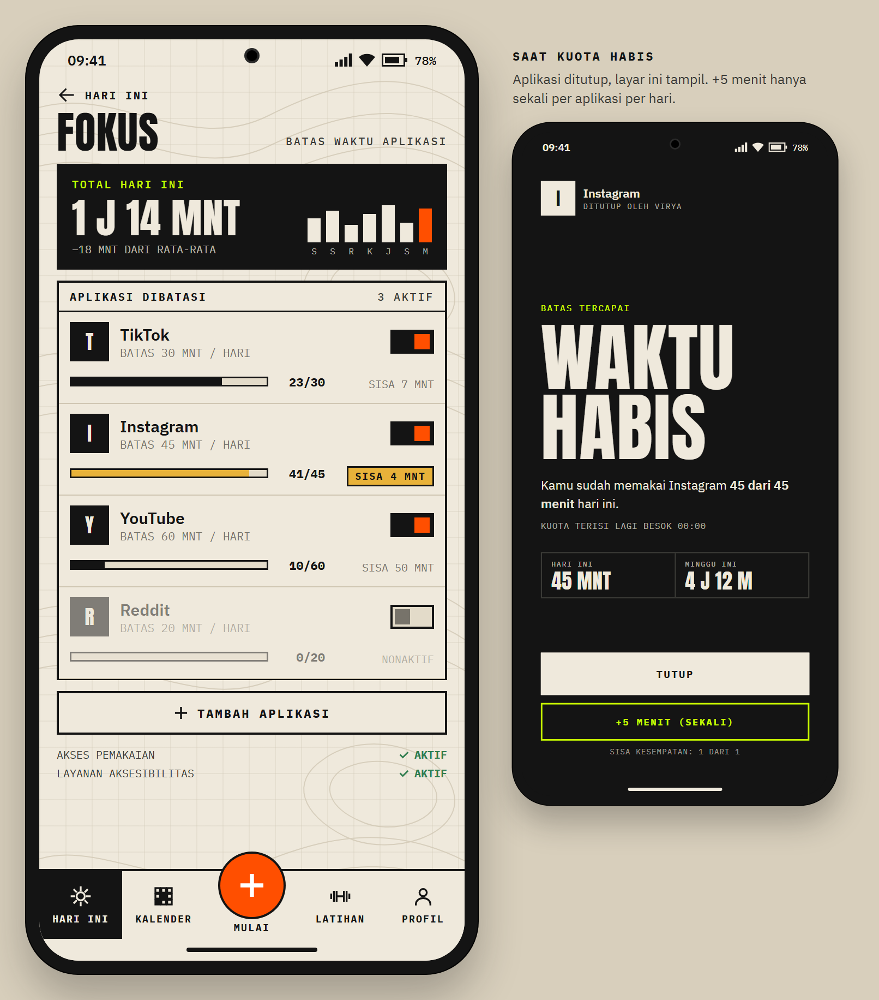
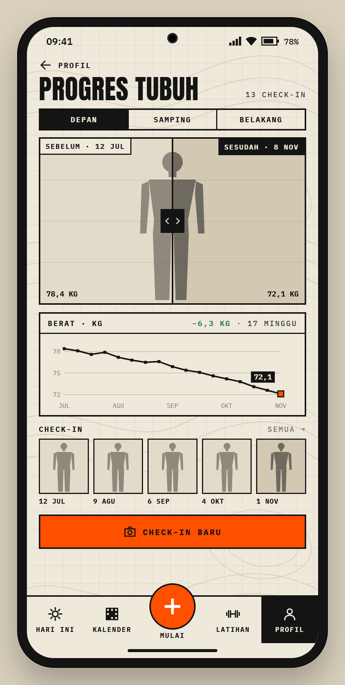
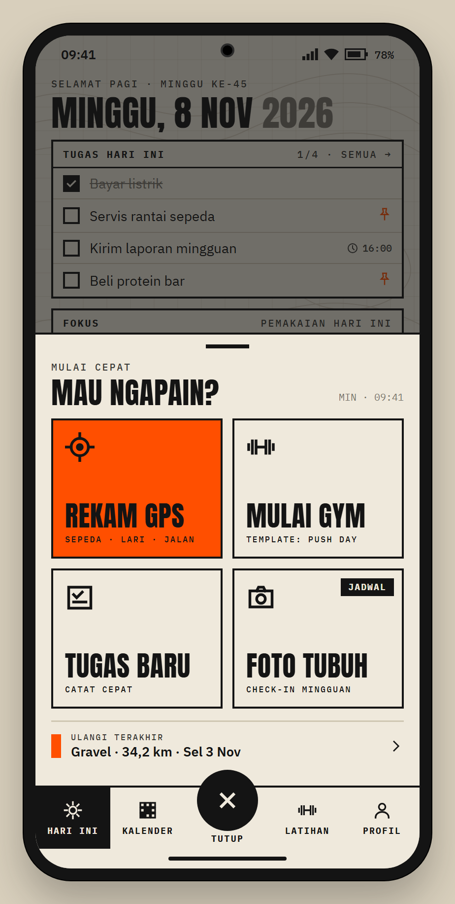

01 · Hari Ini
Tugas, fokus, latihan, minggu ini, pengingat

02 · Kalender
Heatmap kategori, filter, streak, detail hari

03 · Sesi Gym
Set × kg × reps, nilai sebelumnya, timer istirahat

04 · Tugas
Catat cepat, berpin, notifikasi balas + ubin QS

05 · Widget
Widget 4×2: tugas berpin + sisa fokus

06 · Fokus
Batas per aplikasi + layar Waktu habis

07 · Progres Tubuh
Slider sebelum/sesudah, grafik berat, check-in

08 · Tombol Mulai
Lembar cepat dari tombol tengah